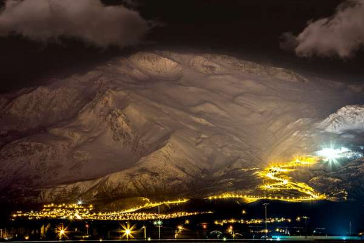

ERGAN DAĞI

Ergan Dağı Kış Sporları Turizm Merkezi kayak alanı; 1.800 m, 2.662 m, 2.455 m, uzunluğunda Türkiye’nin en uzun liftlerinden oluşan ve teleferik ve telesiyej tesisine sahiptir.
Saatte 2.700 kişi taşıma kapasiteli yeni teknoloji telesiyej sistemi ve saatte 1.000 kişi taşıma kapasiteli teleferik sistemi ile Ergan Dağı Kış Sporları Turizm Merkezi, Türkiye’nin yeni kayak merkezi olmaya adaydır.
Munzur Dağları' sisteminden Ergan Dağı eteklerindedir ve tesisin yüksekliği 2 bin 970 m'dir.
Kayak merkezine çift şeritli, refüj aydınlatmalı ve bitümlü sıcak kaplama yol ile ulaşım sağlanmaktadır. Ergan Kayak Merkezi alanında 2 etaptan oluşan telesiyej sistemi kuruludur.
1 adet günübirlik konaklama tesisleri mevcuttur. Başlangıç noktası; Arpalık mevkiinden 10 kişilik 30 adet gondol-teleferik hattı ile Ardıçlı Gölü’nde kurulu kayak alanının başlangıcına erişim sağlanmaktadır. Ayrıca Ardıçlı Gölü’nde kurulu kayak alanına karayolu ile de ulaşım sağlanabilmektedir. Kayak alanının I. Etabı 1740 m rakımlı Ardıçlı Gölü’nden başlayıp, 2340 rakımlı Yayla Düzünde bitmektedir. Bu alanda 2580 metre uzunluğundaki 4 kişilik bubble sistem telesiyej sistemi mevcuttur. Kayak alanının II. Etabı 2340 m rakımlı yayla düzünden başlayıp; 2950 rakımlı olan kısımda bitmektedir. Bu alanda ise 2362 metre uzunluğundaki 4 kişilik bubble sistem telesiyej sistemi mevcuttur.
Turizm Bakanlığı tarafından 8.000 yataklı otel yapılması planlanmaktadır. Tesis tamamlandığında 12 km'lik pisti ile dünyanın sayılı kayak pistlerinden biri olacaktır. Yatırım Doğu Anadolu Bölgesinin en büyük turizm yatırımıdır.
Erzincan iklimi yılda 180 gün kar yağışına uygundur. Türkiye karasal ikliminde kar 90 gün yerde kalmaktadır. Ergan Dağı'nın yüksekliği ve kuzey bakılı olması karın yerde kalma süresini uzatmaktadır. Meteoroloji verilerine göre alanda 1500 m üzerinde kar yağışı aralık ayında başlamakta ve Mayıs ayına kadar yerde kalmaktadır.